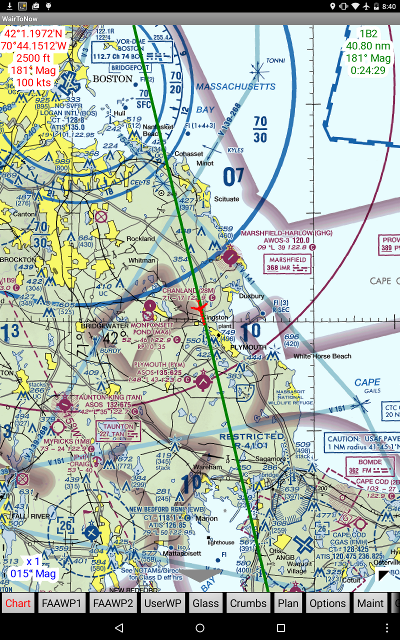

Chart page
This is the main moving map page.

- Background is the moving map. If black, select a chart by clicking the
Chart button at the bottom or clicking the select chart cloud
in the lower right corner.
- Auto SEC - selects sectional(s) to cover the screen (provided
they have been already downloaded. Any legend information is trimmed
from the borders and they are stitched together if necessary.
- Auto WAC - same as Auto SEC except for world charts.
- Street - use OpenStreetMap tiles at appropriate zoom level for
display. Requires Internet connection if tiles have not already
been displayed on this device.
- Chart name in WHITE - chart has not been downloaded. Selecting the
chart will initiate download. Requires Internet connection.
- Chart name in RED - chart has been download but is expired. Use
maint page to update.
- Chart name in YELLOW - chart has been downloaded, is valid now, but is
about to expire. See maint page for expiration
date and to download updated chart.
- Chart name in GREEN - chart has been downloaded and is valid now and
for the next few days.
NOTE: If only a selection for Street appears, it is usually because
the device has not received a GPS position report, the GPS position is not in an
area covered by the app, or that the database has not been
downloaded.
- Upper left corner cloud shows the latest position received by the GPS.
The cloud will shrink to a red triangle button when clicked and can be
restored by clicking the red triangle.
The latest GPS position is indicated by the red airplane icon
on the map, provided the display contains the lat/lon of the latest GPS
position.
- Lower left corner cloud shows the lat/lon position of the center of the
display, zoom factor and map rotation (see below). There will also be a
blue cross in the center if the airplane is not centered in the display.
The cloud and line will shrink to a blue triangle button when clicked and
can be restored by clicking the blue triangle.
- If a course is selected (via FAAWP1/2,
UserWP GoTo buttons), the course information
will be shown in the upper right corner cloud in green along with a green course
line. The cloud and line may be hidden by clicking on the cloud, shrinking it to
a green triangle, and can be restored by clicking the green triangle. The course
can be cleared by long-clicking on the cloud or green triangle button.
- Select a different chart by either clicking the Chart button in
the menu bar at the bottom of the screen or by clicking the black triangle
or select chart cloud in the lower right corner of the map.
NOTE: If you manually pan the display, the chart will fix in place and
will not track movement of the airplane. The airplane will move but the chart
will not. To re-engage tracking, click the Android menu button then
click Re-center. The chart will move to maintain the airplane in the
center of the display, the blue cross will be taken away and the information
in the lower left corner cloud will be reduced to a minimum.
The details of what appears in the lower left corner cloud may vary based
on the current situation. At most, lines such as these will appear:
6.79 nm
011° Mag
42°41.4634'N
70°53.3888'W
x 1
015° Mag
- 6.79 nm - distance from airplane icon to center
of screen. Not shown if aircraft is centered on screen because it would be zero.
- 011° Mag - heading from airplane icon to center
of screen. Not shown if aircraft is centered on screen because it would be undefined.
- 42°41.4634'N - latitude of center of screen.
Not shown if aircraft is centered on screen and upper left corner opened because it
would be same as current GPS latitude as shown in upper left corner.
- 70°53.3888'W - longitude of center of screen.
Not shown if aircraft is centered on screen and upper left corner opened because it
would be same as current GPS longitude as shown in upper left corner.
- x 1 - chart magnification factor. x1 indicates
standard 500,000:1 sectional magnification.
- 015° Mag - chart chart rotation factor, ie,
what chart heading is 'UP'.